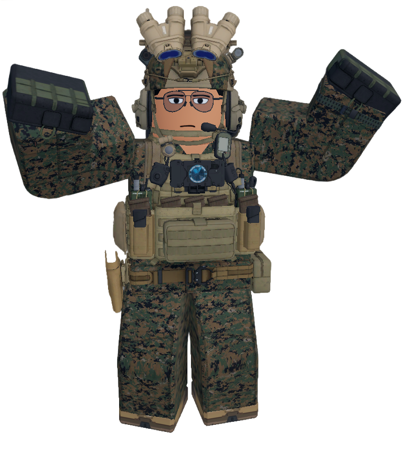

2nd Raiding Squadron Uniform

MARPAT Woodland
Earwear: Max Communication Headset -Connectorized (Attached to helmet)
Backpack: Player's Customization
Apparel: MCCUU Set (MARPAT Woodland) Set
Vest: 6094A (Tan)
Belt: Task Force (Coyote 498)
Handwear: HOG (CTF) Alpha (Ranger Green)
Footwear: Tan
Not mentioned Appearance/Equipments are subjected to player's customization.